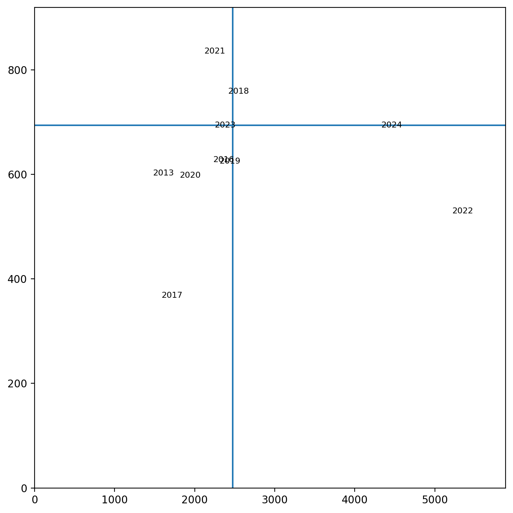

Code
%load_ext jupyter_black
%load_ext autoreload
%autoreload 2Loading and processing GloFAS reanalysis
%load_ext jupyter_black
%load_ext autoreload
%autoreload 2import matplotlib.pyplot as plt
import matplotlib.dates as mdates
import pandas as pd
import xarray as xr
from src.datasources import nihsa, glofas
from src.utils import blobstation_name = "wuroboki"glofas.download_glofas_reanalysis_to_blob(station_name=station_name)ds-aa-nga-flooding/raw/glofas/reanalysis/glofas_raw_reanalysis_wuroboki_1979.grib already exists in blob storage
ds-aa-nga-flooding/raw/glofas/reanalysis/glofas_raw_reanalysis_wuroboki_1980.grib already exists in blob storage
ds-aa-nga-flooding/raw/glofas/reanalysis/glofas_raw_reanalysis_wuroboki_1981.grib already exists in blob storage
ds-aa-nga-flooding/raw/glofas/reanalysis/glofas_raw_reanalysis_wuroboki_1982.grib already exists in blob storage
ds-aa-nga-flooding/raw/glofas/reanalysis/glofas_raw_reanalysis_wuroboki_1983.grib already exists in blob storage
ds-aa-nga-flooding/raw/glofas/reanalysis/glofas_raw_reanalysis_wuroboki_1984.grib already exists in blob storage
ds-aa-nga-flooding/raw/glofas/reanalysis/glofas_raw_reanalysis_wuroboki_1985.grib already exists in blob storage
ds-aa-nga-flooding/raw/glofas/reanalysis/glofas_raw_reanalysis_wuroboki_1986.grib already exists in blob storage
ds-aa-nga-flooding/raw/glofas/reanalysis/glofas_raw_reanalysis_wuroboki_1987.grib already exists in blob storage
ds-aa-nga-flooding/raw/glofas/reanalysis/glofas_raw_reanalysis_wuroboki_1988.grib already exists in blob storage
ds-aa-nga-flooding/raw/glofas/reanalysis/glofas_raw_reanalysis_wuroboki_1989.grib already exists in blob storage
ds-aa-nga-flooding/raw/glofas/reanalysis/glofas_raw_reanalysis_wuroboki_1990.grib already exists in blob storage
ds-aa-nga-flooding/raw/glofas/reanalysis/glofas_raw_reanalysis_wuroboki_1991.grib already exists in blob storage
ds-aa-nga-flooding/raw/glofas/reanalysis/glofas_raw_reanalysis_wuroboki_1992.grib already exists in blob storage
ds-aa-nga-flooding/raw/glofas/reanalysis/glofas_raw_reanalysis_wuroboki_1993.grib already exists in blob storage
ds-aa-nga-flooding/raw/glofas/reanalysis/glofas_raw_reanalysis_wuroboki_1994.grib already exists in blob storage
ds-aa-nga-flooding/raw/glofas/reanalysis/glofas_raw_reanalysis_wuroboki_1995.grib already exists in blob storage
ds-aa-nga-flooding/raw/glofas/reanalysis/glofas_raw_reanalysis_wuroboki_1996.grib already exists in blob storage
ds-aa-nga-flooding/raw/glofas/reanalysis/glofas_raw_reanalysis_wuroboki_1997.grib already exists in blob storage
ds-aa-nga-flooding/raw/glofas/reanalysis/glofas_raw_reanalysis_wuroboki_1998.grib already exists in blob storage
ds-aa-nga-flooding/raw/glofas/reanalysis/glofas_raw_reanalysis_wuroboki_1999.grib already exists in blob storage
ds-aa-nga-flooding/raw/glofas/reanalysis/glofas_raw_reanalysis_wuroboki_2000.grib already exists in blob storage
ds-aa-nga-flooding/raw/glofas/reanalysis/glofas_raw_reanalysis_wuroboki_2001.grib already exists in blob storage
ds-aa-nga-flooding/raw/glofas/reanalysis/glofas_raw_reanalysis_wuroboki_2002.grib already exists in blob storage
ds-aa-nga-flooding/raw/glofas/reanalysis/glofas_raw_reanalysis_wuroboki_2003.grib already exists in blob storage
ds-aa-nga-flooding/raw/glofas/reanalysis/glofas_raw_reanalysis_wuroboki_2004.grib already exists in blob storage
ds-aa-nga-flooding/raw/glofas/reanalysis/glofas_raw_reanalysis_wuroboki_2005.grib already exists in blob storage
ds-aa-nga-flooding/raw/glofas/reanalysis/glofas_raw_reanalysis_wuroboki_2006.grib already exists in blob storage
ds-aa-nga-flooding/raw/glofas/reanalysis/glofas_raw_reanalysis_wuroboki_2007.grib already exists in blob storage
ds-aa-nga-flooding/raw/glofas/reanalysis/glofas_raw_reanalysis_wuroboki_2008.grib already exists in blob storage
ds-aa-nga-flooding/raw/glofas/reanalysis/glofas_raw_reanalysis_wuroboki_2009.grib already exists in blob storage
ds-aa-nga-flooding/raw/glofas/reanalysis/glofas_raw_reanalysis_wuroboki_2010.grib already exists in blob storage
ds-aa-nga-flooding/raw/glofas/reanalysis/glofas_raw_reanalysis_wuroboki_2011.grib already exists in blob storage
ds-aa-nga-flooding/raw/glofas/reanalysis/glofas_raw_reanalysis_wuroboki_2012.grib already exists in blob storage
ds-aa-nga-flooding/raw/glofas/reanalysis/glofas_raw_reanalysis_wuroboki_2013.grib already exists in blob storage
ds-aa-nga-flooding/raw/glofas/reanalysis/glofas_raw_reanalysis_wuroboki_2014.grib already exists in blob storage
ds-aa-nga-flooding/raw/glofas/reanalysis/glofas_raw_reanalysis_wuroboki_2015.grib already exists in blob storage
ds-aa-nga-flooding/raw/glofas/reanalysis/glofas_raw_reanalysis_wuroboki_2016.grib already exists in blob storage
ds-aa-nga-flooding/raw/glofas/reanalysis/glofas_raw_reanalysis_wuroboki_2017.grib already exists in blob storage
ds-aa-nga-flooding/raw/glofas/reanalysis/glofas_raw_reanalysis_wuroboki_2018.grib already exists in blob storage
ds-aa-nga-flooding/raw/glofas/reanalysis/glofas_raw_reanalysis_wuroboki_2019.grib already exists in blob storage
ds-aa-nga-flooding/raw/glofas/reanalysis/glofas_raw_reanalysis_wuroboki_2020.grib already exists in blob storage
ds-aa-nga-flooding/raw/glofas/reanalysis/glofas_raw_reanalysis_wuroboki_2021.grib already exists in blob storage
ds-aa-nga-flooding/raw/glofas/reanalysis/glofas_raw_reanalysis_wuroboki_2022.grib already exists in blob storage
ds-aa-nga-flooding/raw/glofas/reanalysis/glofas_raw_reanalysis_wuroboki_2023.grib already exists in blob storage
ds-aa-nga-flooding/raw/glofas/reanalysis/glofas_raw_reanalysis_wuroboki_2024.grib already exists in blob storageglofas.process_glofas_reanalysis(station_name=station_name)df_ra = glofas.load_glofas_reanalysis(station_name=station_name)df_ra| time | dis24 | |
|---|---|---|
| 0 | 1979-01-01 | 79.656250 |
| 1 | 1979-01-02 | 77.609375 |
| 2 | 1979-01-03 | 76.515625 |
| 3 | 1979-01-04 | 75.671875 |
| 4 | 1979-01-05 | 74.843750 |
| ... | ... | ... |
| 16736 | 2024-10-27 | 1411.625000 |
| 16737 | 2024-10-28 | 1280.859375 |
| 16738 | 2024-10-29 | 1156.441406 |
| 16739 | 2024-10-30 | 1043.812500 |
| 16740 | 2024-10-31 | 943.191406 |
16741 rows × 2 columns
df_nh = nihsa.load_wuroboki()df_nh| time | level | |
|---|---|---|
| 2 | 1954-05-25 | 398.0 |
| 3 | 1954-05-26 | 383.0 |
| 4 | 1954-05-27 | 389.0 |
| 5 | 1954-05-28 | 408.0 |
| 6 | 1954-05-29 | 404.0 |
| ... | ... | ... |
| 27234 | 2024-12-27 | 458.0 |
| 27235 | 2024-12-28 | 455.0 |
| 27236 | 2024-12-29 | 451.0 |
| 27237 | 2024-12-30 | 457.0 |
| 27238 | 2024-12-31 | 457.0 |
26646 rows × 2 columns
df_compare = df_ra.merge(df_nh, how="left")df_compare| time | dis24 | level | |
|---|---|---|---|
| 0 | 1979-01-01 | 79.656250 | 149.0 |
| 1 | 1979-01-02 | 77.609375 | 147.0 |
| 2 | 1979-01-03 | 76.515625 | 146.0 |
| 3 | 1979-01-04 | 75.671875 | 145.0 |
| 4 | 1979-01-05 | 74.843750 | 144.0 |
| ... | ... | ... | ... |
| 31277 | 2024-10-27 | 1411.625000 | 595.0 |
| 31278 | 2024-10-28 | 1280.859375 | 585.0 |
| 31279 | 2024-10-29 | 1156.441406 | 583.0 |
| 31280 | 2024-10-30 | 1043.812500 | 568.0 |
| 31281 | 2024-10-31 | 943.191406 | 543.0 |
31282 rows × 3 columns
months = range(7, 11)
df_plot = df_compare[
(df_compare["time"].dt.month.isin(months))
# & (df_compare["time"].dt.year.isin(nihsa.WUROBOKI_COMPLETE_YEARS))
]
dis_max = df_plot["dis24"].max()
level_max = df_plot["level"].max()
n_years = df_plot["time"].dt.year.nunique()
ncols = 3
nrows = round(n_years / ncols) + 1
fig, axes = plt.subplots(
nrows=nrows, ncols=ncols, figsize=(ncols * 5, nrows * 3)
)
axes = axes.flatten()
for j, year in enumerate(df_plot["time"].dt.year.unique()):
dff = df_plot[df_plot["time"].dt.year == year]
ax = axes[j]
ax2 = ax.twinx()
ax.plot(
dff["time"],
dff["level"],
color="dodgerblue",
label="NiHSA\n(mm, left axis)",
)
ax.set_ylim(bottom=0, top=level_max * 1.1)
ax2.plot(
dff["time"],
dff["dis24"],
color="darkorange",
label="GloFAS\n(m$^{3}$/s, right axis)",
)
ax2.set_ylim(bottom=0, top=dis_max * 1.1)
ax.xaxis.set_major_locator(mdates.MonthLocator())
ax.xaxis.set_major_formatter(mdates.DateFormatter("%b"))
ax.set_title(year)
if j == 0:
ax.legend(loc="upper left")
ax2.legend(loc="upper right")
fig.suptitle(
f"Comparison of NiHSA and GloFAS reanalysis for {station_name.capitalize()}",
fontsize=16,
y=1,
)
plt.tight_layout()
plt.savefig(
"temp/wuroboki_nihsa_glofas_comparison.png", dpi=200, bbox_inches="tight"
)df_compare.corr()| time | dis24 | level | |
|---|---|---|---|
| time | 1.000000 | -0.104751 | 0.273537 |
| dis24 | -0.104751 | 1.000000 | 0.431741 |
| level | 0.273537 | 0.431741 | 1.000000 |
df_peaks = df_compare.groupby(df_compare["time"].dt.year.rename("year")).agg(
dis24_max=("dis24", "max"),
dis24_max_date=("dis24", lambda x: df_compare.loc[x.idxmax(), "time"]),
level_max=("level", "max"),
level_max_date=(
"level",
lambda x: (
df_compare.loc[x.idxmax(), "time"] if x.notna().any() else pd.NaT
),
),
)For all years
df_peaks.corr()| dis24_max | dis24_max_date | level_max | level_max_date | |
|---|---|---|---|---|
| dis24_max | 1.000000 | -0.237596 | -0.110596 | -0.000819 |
| dis24_max_date | -0.237596 | 1.000000 | 0.486702 | 0.254707 |
| level_max | -0.110596 | 0.486702 | 1.000000 | 0.490125 |
| level_max_date | -0.000819 | 0.254707 | 0.490125 | 1.000000 |
For complete years
df_peaks.loc[nihsa.WUROBOKI_COMPLETE_YEARS].corr()| dis24_max | dis24_max_date | level_max | level_max_date | |
|---|---|---|---|---|
| dis24_max | 1.000000 | -0.130591 | -0.049523 | -0.130661 |
| dis24_max_date | -0.130591 | 1.000000 | 0.755940 | 0.999996 |
| level_max | -0.049523 | 0.755940 | 1.000000 | 0.755662 |
| level_max_date | -0.130661 | 0.999996 | 0.755662 | 1.000000 |
# df_plot = df_peaks.loc[nihsa.WUROBOKI_COMPLETE_YEARS].copy()
df_plot = df_peaks.loc[2013:]
# df_plot = df_peaks.copy()
rp = 3
fig, ax = plt.subplots(dpi=200, figsize=(7, 7))
dis24_thresh = df_plot["dis24_max"].quantile(1 - 1 / rp)
level_thresh = df_plot["level_max"].quantile(1 - 1 / rp)
for year, row in df_plot.iterrows():
ax.annotate(
year,
(row["dis24_max"], row["level_max"]),
ha="center",
va="center",
fontsize=8,
)
ax.axvline(dis24_thresh)
ax.axhline(level_thresh)
ax.set_ylim(bottom=0, top=df_plot["level_max"].max() * 1.1)
ax.set_xlim(left=0, right=df_plot["dis24_max"].max() * 1.1)
plt.tight_layout()
Hard to say but doesn’t look great - NiHSA data is just too patchy